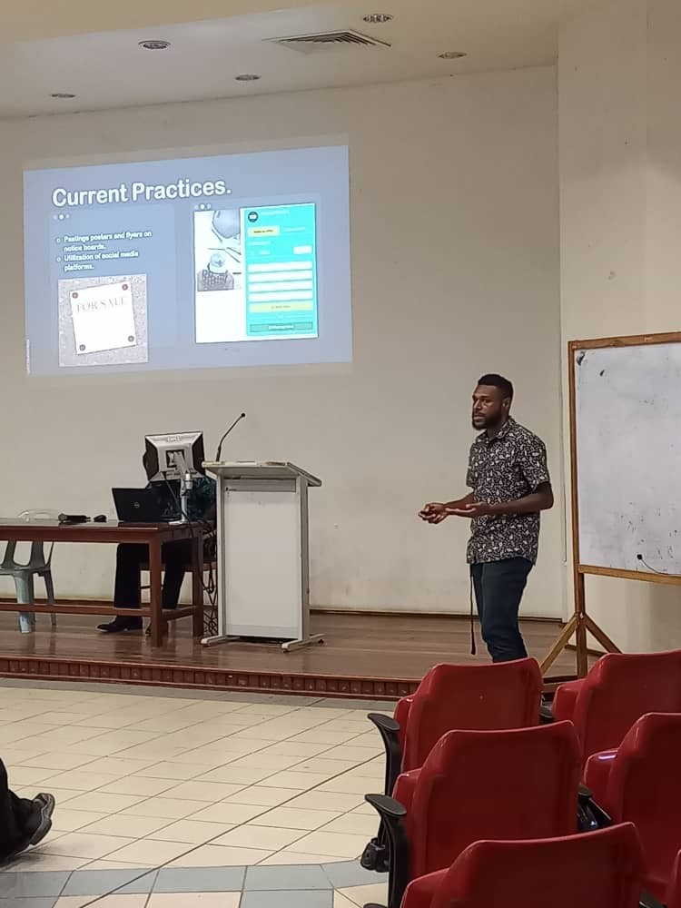
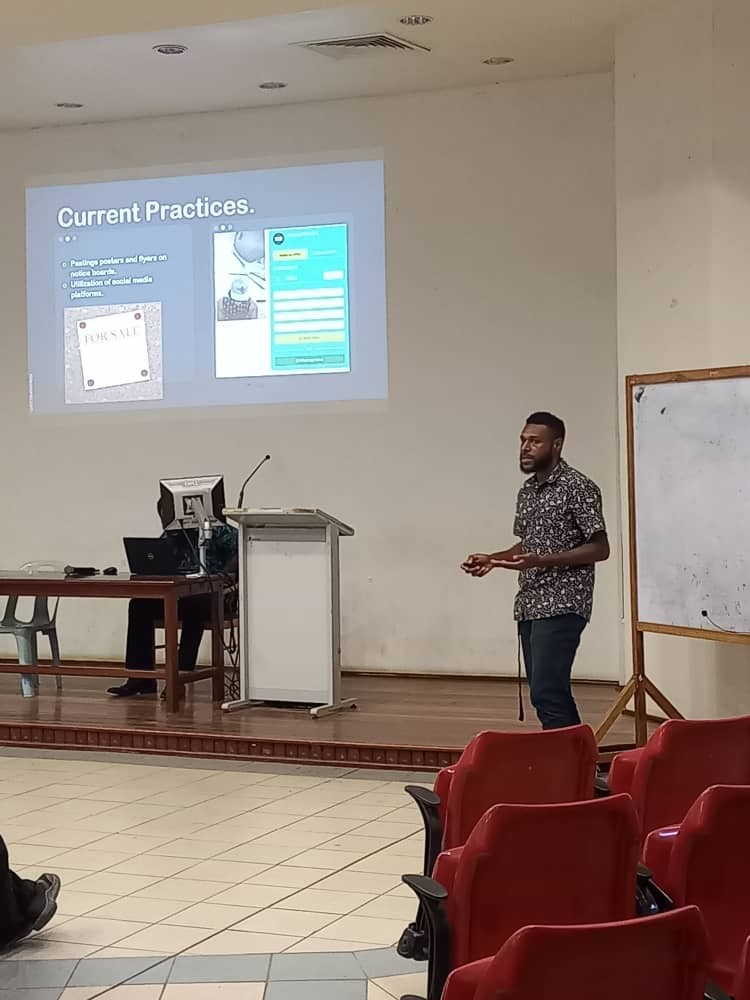

About Me
A very passionate computer programmer, more familiar with Java programming language, building desktop apps as well as android apps for mobile phones, tend to be more focused on web development specifically developing web apps with all necessary full stack developer skills. Having a fair understanding of networking, working with cisco packet tracer configuring routers and switches to create a working model of actual network setups. Keen to pursue career in developing robust software and systems with a focus in cyber security.
Education Information
Divine Word University | Madang Campus 2020 - 2023
Bachelor in Mathematics and Computing Science
2020 - 2023

 

Core Skills
Computing Science
- Structured Programming
- Object Oriented Programming (OOP)
- Data Structures and Algorithms
- Systems Analysis and Design
- Database Design
- Data Networking (CCNA 1,2 & 3)
- Communication Skills
- Computer Organization
Mathematics
- Calculus I, II and III (Theory and Applications of Derivatives and Integrals)
- Discrete Mathematics
- Probability and Statistics 1 and 2
- Abstract Algebra
Experience
Work experience details go here...
Contact Information
Email: elaishapetrus49@gmail.com
Mobile: 74371442
Data Analyst
Data Analysts are responsible for collecting, processing, and analyzing data to help businesses make informed decisions. They use various tools and techniques to extract insights from data and present them in a meaningful way.
Skills
- Data cleaning and preprocessing
- Data visualization
- Statistical analysis
- Programming languages (e.g., Python, R)
- Database querying (SQL)
- Machine learning techniques
Applications Developer
Applications Developers are responsible for designing, building, and maintaining software applications that meet specific business needs. They collaborate with stakeholders to understand requirements, and then develop, test, and deploy applications using various programming languages and frameworks.
Skills
- Proficiency in programming languages such as Java, C#, or JavaScript
- Experience with software development methodologies (e.g., Agile, Scrum)
- Knowledge of web development technologies (HTML, CSS, JavaScript)
- Database design and management (SQL, NoSQL)
- Version control systems (e.g., Git)
- Problem-solving and analytical skills
IT Support
Applications Developers are responsible for designing, building, and maintaining software applications that meet specific business needs. They collaborate with stakeholders to understand requirements, and then develop, test, and deploy applications using various programming languages and frameworks.
Skills
- Proficiency in programming languages such as Java, C#, or JavaScript
- Experience with software development methodologies (e.g., Agile, Scrum)
- Knowledge of web development technologies (HTML, CSS, JavaScript)
- Database design and management (SQL, NoSQL)
- Version control systems (e.g., Git)
- Problem-solving and analytical skills